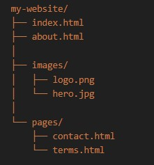
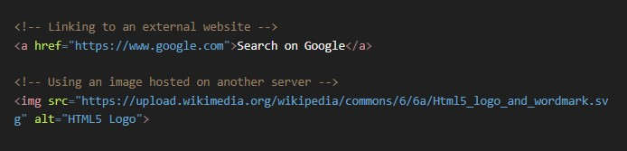
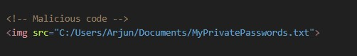
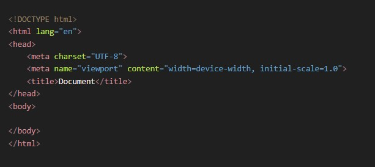
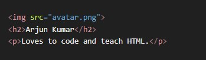
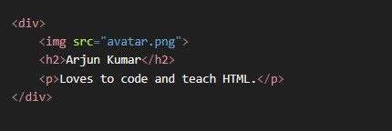
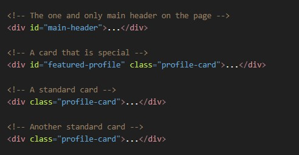

Step 1: The First Principle (The Fundamental Truth)
The most fundamental truth is this: A website is not one single file.
It's a collection of different files (HTML, CSS, JavaScript, images, videos, fonts) that all need to work together. These files are organized into folders, just like documents on your computer.
Step 2: The Core Problem
Now we have a core problem: If your index.html file needs to display an image named logo.png, how does the HTML file tell the browser where to find logo.png?
You can't just say src="logo.png" and expect it to work every time. What if the logo is in an images folder? What if it's on a completely different website?
The browser needs an exact, unambiguous address to locate the file. A file path is that address.
A) Relative File Paths (The Most Important for Your Projects)
A relative file path gives directions to a file starting from the location of the file you are currently in. You will use this 99% of the time for linking your own files together (images, CSS, other HTML pages).
Here are the different scenarios:
Scenario 1: Linking to a file in the SAME folder.
- The Problem: You are in index.html and want to link to about.html.
- The Logic: They are neighbors, living in the same my-website/ folder. The directions are as simple as possible.
- The Syntax: You just use the filename.
Scenario 2: Linking to a file in a SUB-FOLDER (Going Down).
- The Problem: You are in index.html and want to display logo.png.
- The Logic: From index.html, you need to go into the images folder to find the logo.
- The Syntax: You write the folder name, a forward slash /, and then the filename.codeHtml
Scenario 3: Linking to a file in a PARENT FOLDER (Going Up).
- The Problem: You are in contact.html (which is inside pages/) and you want to display logo.png (which is inside images/).
- The Logic: You can't go directly from pages/ to images/. You must first go up one level out of the pages folder to get back to the main my-website/ folder. From there, you can go down into the images folder.
- The Syntax: Two dots and a slash (../) means "go up one level."codeHtml
- ../ takes you from pages/ up to my-website/.
- images/logo.png then takes you down into the images folder to find the file.

B) Absolute File Paths
An absolute file path gives the full, complete URL to a resource on the web. It starts with http:// or https://.
When to use it:
You ONLY use absolute paths when you are linking to a resource that is NOT on your own website.
- Linking to another website.
- Using a font from Google Fonts.
- Using an image from an image-hosting service.
Example:
codeHtml
The Critical "Why": Why not use absolute paths for your own files?
A beginner might be tempted to copy the full path from their computer, like this:
src="C:/Users/Arjun/Desktop/my-website/images/logo.png"
This is a major mistake. This address only works on your computer. The moment you upload your website to a real web server, that path becomes meaningless and the image will be broken.
Think of a web browser (like Chrome, Firefox, etc.) as a secure prison for the code it runs. This prison is called a "sandbox."
- The Inmates: The HTML, CSS, and JavaScript code you load.
- The Prison Walls: The browser itself.
The primary rule of this prison is: Code running inside the sandbox is NOT allowed to freely access the host computer's file system.
The Core Problem: A Malicious Website
Imagine if this security rule didn't exist. You could visit a malicious website, evil-website.com, and it could contain the following HTML:
codeHtml
If the browser allowed this, the website could potentially read the contents of your private files, your photos, your documents—anything on your computer. It would be a catastrophic security disaster.
Relative paths, however, will always work because they describe the location of files relative to each other, no matter what computer or server they are on.
Summary / Rules of Thumb
- For Your Own Files (Internal Links): ALWAYS use Relative Paths.
- filename.html (Same folder)
- folder/filename.html (Go down)
- ../filename.html (Go up)
- For Other Websites' Files (External Links): ALWAYS use Absolute Paths.
- https://www.example.com/page.html
Absolute Path in Windows
The Windows file system is organized into separate drives, each identified by a letter (like C:, D:, etc.).
- Starting Point (The Root): An absolute path in Windows always starts with a drive letter followed by a colon and a backslash, like C:\. This is the "root" of that specific drive.
- Directory Separator: Windows uses a backslash \ to separate directories and files in the path.
Windows Structure:
Drive:\Folder\SubFolder\file.txt
Example:
Imagine a file named report.docx located in the Documents folder of a user named JohnDoe on the main C: drive.
The absolute path would be:
C:\Users\JohnDoe\Documents\report.docx
Let's break it down:
- C:\ - Start at the root of the C drive.
- Users - Go into the "Users" folder.
- JohnDoe - Go into the "JohnDoe" folder.
- Documents - Go into the "Documents" folder.
- report.docx - Here is the file.
Absolute Path in macOS (and Linux)
The macOS file system (like Linux and other Unix-like systems) does not use drive letters. Instead, it has a single, unified file system.
- Starting Point (The Root): An absolute path in macOS always starts with a single forward slash /. This symbol represents the one and only root of the entire file system.
- Directory Separator: macOS uses a forward slash / to separate directories and files. (This is the same separator used in web URLs, which is a helpful thing to remember).
macOS Structure:
/Folder/SubFolder/file.txt
Example:
Let's find the same file: report.docx in the Documents folder for the user johndoe.
The absolute path would be:
/Users/johndoe/Documents/report.docx
Let's break it down:
- / - Start at the absolute root of the entire file system.
- Users - Go into the "Users" directory.
- johndoe - Go into the "johndoe" directory (usernames are typically lowercase on macOS/Linux).
- Documents - Go into the "Documents" directory.
- report.docx - Here is the file.
Summary of Key Differences
| Feature | Windows | macOS / Linux |
|---|---|---|
| Starting Point (Root) | Drive Letter (e.g., C:\) | A single forward slash (/) |
| Directory Separator | Backslash (\) | Forward Slash (/) |
| Example | C:\Users\JohnDoe\Documents\report.docx | /Users/johndoe/Documents/report.docx |
HTML Boilerplate Code
Step 1: The First Principle (The Fundamental Truth)
The fundamental truth is that a web browser is a program that needs specific, predictable instructions to do its job. It cannot guess your intentions. You can't just give it a file with a <h1> tag and expect it to know what kind of document it is, what language it's in, or how to render it properly.
Step 2: The Core Problem
We need a way to give the browser essential "setup information" before it starts rendering our visible content (like paragraphs and images). This setup information needs to answer critical questions:
- "What version of HTML am I reading?" (So I know which rules to follow).
- "What character encoding should I use?" (So characters like ©, ’, or ₹ are displayed correctly and not as gibberish like ’).
- "What should the title of the browser tab be?"
- "How should this page behave on a mobile device vs. a desktop?"
Just writing <p> Hello <p> doesn't answer any of these questions.
Step 3: The Logical Solution - The Boilerplate
The solution is to create a standard, universal starting template—a boilerplate. This is a block of code that you will start every single HTML file with. It's not something you need to reinvent each time; you just copy-paste it and fill in the blanks.
It's the "blueprint of the house" that you need before you can start putting in the walls (<h1>) and windows (<img>).
Let's build the modern HTML5 boilerplate from first principles:
The Anatomy of the HTML Boilerplate
codeHtml
Let's break down each line and explain why it's necessary.
- <!DOCTYPE html>
- The Problem: In the past, there were many versions of HTML (HTML4, XHTML, etc.). The browser needed to know which set of rules to use to render the page.
- The Solution: This is the very first line and it's called the Document Type Declaration. In modern HTML5, it's incredibly simple. This specific line tells the browser: "Use the latest, standard-compliant mode for rendering this HTML document." It's a switch that prevents the browser from falling back into "quirks mode" (an old mode for rendering non-standard pages). It must always be the first thing in your file.
- <html lang="en">...</html>
- The Problem: The web is global. How do search engines (like Google) and screen readers (for accessibility) know what human language the content is written in?
- The Solution: This is the root element that wraps your entire page. The lang="en" attribute declares that the primary language of the page content is English. This is very important for accessibility and SEO. You'd change "en" to "es" for Spanish, "hi" for Hindi, etc.
- <head>...</head>
- The Problem: As discussed, we need a place to put all the "behind-the-scenes" information that is for the browser, not for the user to see on the page.
- The Solution: The <head> section is the container for this metadata. Nothing you put inside the <head> will be displayed in the main browser window.
- <meta charset="UTF-8">
- The Problem: Computers fundamentally only understand numbers. To display text, they use a "character set" to map numbers to letters. There are many different character sets, and if the browser uses the wrong one, your text will be garbled.
- The Solution: This meta tag explicitly tells the browser to use UTF-8, which is the universal standard character set for the web. It can represent almost any character and symbol from any language in the world. This line is essential to prevent text-encoding issues.
- <meta name="viewport"...>
- The Problem: A website can be viewed on a tiny phone screen or a giant desktop monitor. If you don't tell a mobile browser how to handle your page, it will try to render it as if it were on a desktop—resulting in a tiny, zoomed-out, unreadable page.
- The Solution: This specific meta tag is the cornerstone of responsive design.
- width=device-width: This tells the browser: "Make the page's width equal to the screen width of the device it's being viewed on."
- initial-scale=1.0: This sets the initial zoom level to 100% when the page is first loaded.
- In simple terms: this line tells the browser to render the page in a way that is optimized for mobile screens.
- <title>...</title>
- The Problem: A user might have 20 tabs open. How do they identify your page? What name should appear when they bookmark your page?
- The Solution: The <title> tag sets the text that appears in the browser tab, in bookmark lists, and in search engine results. It's a critical piece of metadata for both usability and SEO.
- <body>...</body>
- The Problem: Where do we put the actual visible content?
- The Solution: The <body> section is the container for everything the user will actually see on the page: your headings, paragraphs, images, links, tables, etc. All the tags you've learned so far go inside the <body>.
Conclusion: The HTML boilerplate isn't just a random collection of tags. Each line serves a critical, logical purpose to ensure your webpage is rendered correctly, is accessible, is mobile-friendly, and is understood by search engines. It is the non-negotiable starting point for every web page you will ever create.
But website work even without Boilerplate
Browsers are Built to Be Extremely Forgiving.
Think about the early days of the web. It was a chaotic "Wild West." People wrote messy, incorrect, and incomplete HTML all the time. If browsers had been strict—if they had crashed or refused to render a page because of a missing tag—the web would have never taken off.
So, browser makers (like Netscape and Microsoft) made a crucial design decision: "When in doubt, guess."
The Core Problem: How to Handle "Bad" HTML?
A browser's job is to display something, no matter what you give it. When you give it a file without a boilerplate, here's what happens in the background:
- "No <!DOCTYPE html>? Hmm.": The browser says, "Okay, I don't know what version of HTML this is. To be safe, I'll enter Quirks Mode." In quirks mode, the browser tries its best to render the page by mimicking the behavior of very old, non-standard browsers from the late 90s. For a simple <h1>, this usually looks fine, but for more complex layouts (especially with CSS), it can cause strange and unpredictable bugs.
- "No <html> or <body> tags? I'll just pretend they're there.": The browser's parser is smart. It sees content like <h1> that it knows belongs in the <body>. So, it says, "This developer probably forgot the <html>, <head>, and <body> tags. I will implicitly generate them in my internal model (the DOM) so I have somewhere to put this <h1>." You don't see these tags in your file, but the browser creates them in its memory to make sense of your document.
- "No <meta charset="UTF-8">? I'll guess the encoding.": The browser will look at the first few bytes of your file and try to guess what character encoding you used. For simple English text, it will almost always guess correctly (e.g., ASCII or Windows-1252). The problem arises when you use special characters (€, —, ’). If the browser guesses wrong, those characters will break.
- "No <title>? Fine, I'll use the filename.": The browser needs something to put in the tab. So, it just uses the name of your HTML file (e.g., index.html) as the default title.
So, Why Use a Boilerplate if the Browser Fixes Everything?
You're right that for a simple "Hello World" page, it looks the same. But the boilerplate isn't about making a simple page look right; it's about making a professional, reliable, and future-proof website.
Here is why you're playing with fire by omitting it:
- Unpredictable Rendering (Quirks Mode): The biggest danger. Your CSS might work differently across Chrome, Firefox, and Safari because each browser has its own slightly different implementation of quirks mode. What looks good on your machine might look broken on someone else's. Using <!DOCTYPE html> puts all browsers into Standards Mode, which is predictable and consistent.
- Broken Characters: Your site might look fine until you need to write "50€" or "resumé". Without charset="UTF-8", those characters can easily break, making your site look unprofessional.
- Bad Mobile Experience: Without the <meta name="viewport"> tag, your website will be almost unusable on a mobile phone. It will appear as a tiny, zoomed-out version of the desktop site.
- Poor SEO and Accessibility: Search engines and screen readers rely on the boilerplate tags (lang, title) to understand your page. A page without them is a "mystery document." It will rank lower in search results and be more difficult for users with disabilities to navigate.
Conclusion:
You can build a shack with a few pieces of wood and no foundation, and it might stand up on a calm day. The boilerplate is the proper engineering foundation. It ensures your house (website) will stand up in any weather (any browser), is accessible to everyone (screen readers), is easy to find (SEO), and works on any size of land (any device)
Multipage Website
The fundamental truth is that complex information is almost never presented on a single, infinitely long page. We naturally break information into distinct, self-contained topics. A book has chapters, a store has departments, and a company has different aspects (About, Services, Contact).
A multi-page website is the digital equivalent of this.
The Core Problem
We need a way to create these distinct topic pages and, most importantly, a way for a user to navigate between them seamlessly.
How do we connect home.html to about.html and contact.html so that they feel like a single, cohesive "website" rather than three disconnected files?
The Logical Solution: A Shared Structure and a Navigation System
The solution involves two key components:
- A Consistent Structure: All pages on the site should share a common look and feel. They should have the same header (with the logo and navigation) and the same footer. This reassures the user that they are still on the same website.
- A Linking System: We need to use the <a> (anchor) tag to create a navigation menu that appears on every single page, providing reliable doorways to all other pages.
The <div> (The Generic Box)
First Principle (The Fundamental Truth)
We need a way to group different elements (<h1>, <p>, <img>, etc.) together into a single, conceptual unit.
The Core Problem
Imagine you have a "user profile card" on a webpage. It consists of an image, a heading for the user's name, and a paragraph for their bio.
codeHtml
These are three separate elements. What if you want to put a border around all three of them as a single block? Or give them all a shared background color? Or move them all to the right side of the page as one unit? You have no way to target them as a group.
The Logical Solution: The Generic Container
The most basic solution is to invent a generic, meaningless container. Its only job is to be a box that you can put other things into. It shouldn't have any inherent meaning or style; it's just a grouping mechanism.
This is the <div> (short for "division").
By wrapping our elements in a <div>, we create a single "box" that we can now control
codeHtml
Now, using CSS, we can say "put a border on that <div>" and it will wrap around the entire group.
class and id (The Labels for the Box)
First Principle
Once we have boxes (<div>s), we need a way to identify and find them.
The Core Problem
Your webpage might have ten different profile cards, a sidebar, a main content area, and a photo gallery—all made of <div>s. How do you tell the browser (specifically, your CSS or JavaScript) which box you want to style? How do you say, "Make all the profile cards have a gray background, but make the one featured profile card have a gold border?" You need a targeting system.
The Logical Solution: Two Types of Labels
The logical solution is to invent two types of labels (which we call attributes) that you can add to any HTML tag.
- A Unique Identifier: We need a label for one, and only one, specific element on the entire page. It must be unique. This is perfect for major, one-of-a-kind layout sections like the main navigation bar or a search form. This is the id.
- A Reusable Classifier: We also need a label that we can apply to multiple elements to group them into a category. This is for things that have a similar style or function, like all the profile cards, all the error messages, or all the "buy now" buttons. This is the class.
Analogy:
- An id is like a person's unique Social Security Number or Aadhaar Number. Only one person can have it.
- A class is like a person's Job Title (e.g., "Engineer"). Many people in a company can have the class "Engineer".
Example:
codeHtml
Now in CSS, you can target them:
- #main-header { ... } (Targets the one unique element with that ID)
- .profile-card { ... } (Targets ALL THREE elements with that class)
- #featured-profile { ... } (Targets only the one special card to give it a gold border)
The <span> (The Inline Highlighter)